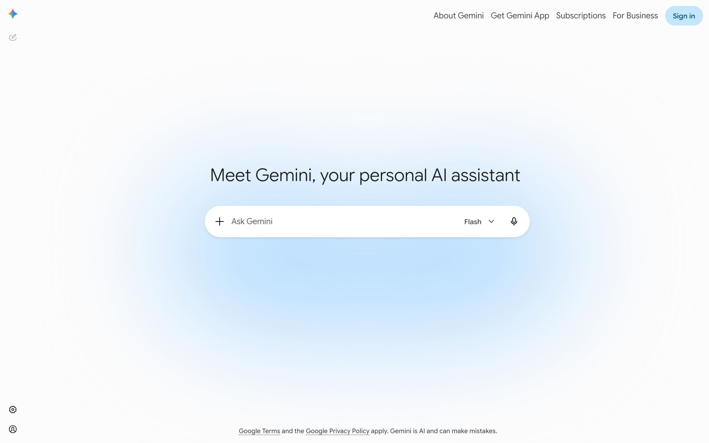

只讲一件事：把话说给 Gemini
入口页把一个超大的对话输入框放在正中，四周是大面积暖白留白，导航收在右上角。没有卖点罗列，没有客户 logo 墙，没有滚动叙事。它用留白与柔光传达轻松可信，用居中圆框把注意力压到唯一的动作上，用品牌蓝与四角星 spark 建立辨识度。
签出的对话入口
直接访问落在带欢迎语与 Ask Gemini 输入框的入口页，既不是多屏营销页，也不是登录后的会话应用。没有可拆的营销动线，故此类判断一律不做。
可见语与无障碍语不同
可见欢迎语是「Meet Gemini, your personal AI assistant」；计算样式里的 h1 却是「Conversation with Gemini」，32px、字重 700 —— 那是读屏用的隐藏语义标题。实锤
亮、柔、圆
暖白不是纯白（rgb(253,252,252)），近黑文字（#1f1f1f），单支品牌蓝，满圆角药丸。整页的分寸就在这份克制里。
一片暖白、一支蓝、一组浅蓝容器
底座是 Material 3，色板高度克制：暖白底、近黑文字、一支品牌蓝，加一组浅蓝「容器色」用来做药丸与高亮。多彩只出现在 spark 图标与背景光晕。点任意色块可复制色值；括号内是它在样式表里的出现次数。
红、黄、绿、蓝
四角星 spark 是 Google 四色极光：上尖红 #f94442、左尖黄 #f9bd13、下尖绿 #0cba63、右尖蓝 #3186ff（蓝为主导）。色值采样自真实资产 gemini_sparkle_4g_512.png，并与站点截图交叉核对。这是页面里 spark 与「四色极光」延展光晕共用的调色板。
实测偏蓝，品牌延展用四色极光
抓到的入口页光晕以浅蓝为主（#a8c7fa、#c2e7ff、#d3e3fd，实锤，与截图一致，即页面默认调色板）。「四色极光」延展改用真实 spark 的红黄绿蓝（色值实锤；把它铺成背景光晕属推断延展，非站点实测）。推断延展
纯无衬线，Google Sans 家族
全站没有任何衬线体，这与衬线大标题的 Comet、Lovart 正相反，是它「干净现代」的关键。主 UI 字体栈是 "Google Sans Flex", "Google Sans", "Helvetica Neue", sans-serif，等宽是 "Google Sans Code"。
字体局限（如实说明）：本轮下到的真实资产里没有任何可下载的字体文件。抓取落在登录态／受限页，document.fonts 只能报出字族名（Google Sans 家族），拿不到字体二进制；Google Sans 本身也是专有、未公开发行。因此正文与标题仍用 CDN Roboto Flex 作替身，等宽用 Roboto Mono，只求字形气质接近，并非真字体。下方大字样张是 Roboto Flex 渲染，仅供近似参照。

带一根圆度轴
wght 400、wdth 100、slnt 0、ROND 0。ROND 是 Google Sans Flex 的圆度轴，能把字形调得更圆，与整体圆润调性统一。
还带一套数学字体
Google Sans、Google Sans Flex、Google Sans Code、Google Sans Mono、Luminous Symbols，以及一整套 KaTeX_* 用于渲染公式。
computed 里的 Times 是回退
计算样式 font-family 返回 Times，几乎确定是 webfont 未生效时的系统衬线兜底。真实字体以加载清单与截图为准。已纠正
Material 3 缓动，被一条曲线统治
时长分两个尺度：微交互层（83ms 到 0.3s）要即时跟手，环境层（2s 到 25s）要缓慢呼吸。缓动是 Material 3 全家，其中 cubic-bezier(.2,0,0,1) 出现约 106 次，是绝对主曲线。下面每条曲线配一个按真实缓动运动的小球，可以直接感受差异。
微交互层（跟手）
环境层（呼吸）
animateGradientgem-shimmer-sweeplm-background-grow
lm-background-mobile-fadeon-load-slide-inon-load-fade-in
apd-ring-fade-infadeOutgm3-cpi-rotatemdc-circular-progress
animateGradient 是签名光晕的动画本体，lm-background-grow 的 lm 应为 landing 前缀。5332ms 与 1333ms 两个异常精确的时长，说明这些循环被认真调过。
缓慢流动的多色柔光 + 圆润对话入口
这是最该被复刻的一手：几个低透明度的径向渐变叠在暖白底下面，各自用超长时长缓慢漂移与缩放，像光在呼吸；正中一个满圆角白色药丸作为唯一操作焦点。全用纯 CSS，没有视频、没有 canvas。回到顶部可以实时把玩强度与调色板。
母题拆解
第一层是浅蓝主光团，居中偏下缓慢缩放（忠于截图实测的浅蓝主调）；「四色极光」延展态再掺入真实 spark 的红、黄、绿、蓝，用错开的相位与 alternate-reverse 流动，做出多色而不脏；两层都用主缓动 cubic-bezier(.2,0,0,1) 与 15s 到 25s 的时长。
母题的精神是「克制的柔光仪式感」：把一个搜索框级别的动作，烘托得郑重而轻盈。
圆角语言、输入区尺寸、命名地层
Gemini 的圆润是一整套圆角刻度，输入框有专属尺寸变量，而 CSS 变量的命名空间还留着产品改名前的化石。
| 圆角（实锤） | 次数 | 用途 |
|---|---|---|
| 50% | 44 | 头像与图标按钮 |
| corner-full | 36 | 输入框、Sign in、提示药丸 |
| corner-medium、8px | 33 | 菜单、小卡片 |
| 28px | 6 | 大卡片、对话气泡 |
| 100px | 12 | 长药丸 |
| 输入区尺寸变量（实锤） | 值 |
|---|---|
| --input-area-height | 42px |
| --input-area-icon-size | 40px |
| --input-area-margin-inline-start | 72px |
| --mat-menu-container-shape | 8px |
| --mat-focus-indicator-border-radius | 50% |
代码里的 Bard 化石
变量前缀暴露底座：--mat-* 是 Angular Material，--gem-sys-* 是 Gemini 系统层，--lumi-sys-* 是名为 Luminous 的主题皮肤，而大量 --bard-color-* 是改名前 Bard 的遗留命名，原样留着没重构。
Angular + Material
keyframe 带 _ngcontent-ng-c… 前缀说明是 Angular；mdc-circular-progress-* 与 gm3-cpi-* 说明用的是 Angular Material 与 GM3 组件。
1.99 MB，零视频
CSS 合计约 1.99 MB，符合 Material 3 全家桶的重量。媒体是视频 0、canvas 0、SVG 5、图片 3 —— 签名光晕只能是 CSS 与 SVG，这正是它能被纯 CSS 复刻的底气。
抽取过程里的七个判断
computed 的 Times 是探测陷阱
三处计算字体都返回 Times，但真实字体是 Google Sans 家族。抓 computed 时若 webfont 未生效，会拿到系统衬线兜底，不能当设计意图。
可见标题与无障碍标题是两个元素
「Meet Gemini…」是可见欢迎语，「Conversation with Gemini」是读屏用的隐藏语义标题，不能混为一谈。
签名光晕是纯 CSS
媒体清单里视频与 canvas 都是 0，柔光靠 CSS 径向渐变加长时长动画完成，成本低、可控、易复刻。
底座是 Material 3 加 Luminous
运动语言就是 Material 3 缓动集，被 cubic-bezier(.2,0,0,1) 统治；色板是中性加单支蓝加容器色的经典结构。
代码里留着 Bard 的化石
--bard-color-* 成规模存在，改名 Gemini 时没重构命名，是产品沿革的直接证据。
变量字体带圆度轴
Google Sans Flex 的 ROND 轴让「圆润」不止于圆角，连字形都能调圆。
采样帧静止,动态属推断
8 张 keyframe 截图字节一致,是不滚动的单屏 SPA 入口。「缓慢流动」由超长时长与 keyframe 名推断,无逐帧实测。
可直接进 :root 的真实 token
下面这段是真实抽取值,复制即用。完整版与签名效果的完整 CSS 见同目录 复刻指南.md 与 design-tokens.css。
/* Gemini 真实 token(实锤) */
:root{
--bg:#fdfcfc; /* 暖白,非纯白 */
--ink:#1f1f1f;
--ink-2:#444746; --ink-3:#5f6368;
--blue:#0b57d0; /* 品牌蓝 */
--blue-light:#a8c7fa;
--container:#d3e3fd; /* 浅蓝药丸底 */
--line:#e3e3e3;
/* 品牌 spark 四色极光(采样自真实资产) */
--spark:#f94442, #f9bd13, #0cba63, #3186ff;
/* 动效 */
--ease-emph:cubic-bezier(.2,0,0,1);
--ease-std:cubic-bezier(.4,0,.2,1);
--micro:.2s; --ambient:20s;
/* 圆角 */
--r-full:999px; --r-card:28px; --r-md:8px;
/* 字体:Google Sans 专有,Roboto Flex 替身 */
--font:"Google Sans Flex","Roboto Flex",sans-serif;
}什么是实锤，什么是推断
抽取靠两条链路：playwright 取渲染后的计算样式,以及服务端直接抓样式表文本(不经浏览器,不受 CORS)。前者是浏览器真实渲染结果但受抓取时机影响,后者是样式表写死的值。
全部色值与出现次数、缓动曲线集、时长梯、圆角集、keyframe 名、CSS 变量、加载字体清单、可变轴、媒体数量、CSS 字节数、截图里的布局与文案。
本轮新增：真实品牌资源——四色 spark（gemini_sparkle_4g_512.png）、Gemini 字标锁定图、sparkle-aurora SVG，已内嵌本页并登记于 real-assets/manifest.json；spark 四色色值即从中采样。
把四色极光铺成背景光晕的机制、Sign in 药丸具体色值、Material 3 与框架判定、Times 为回退的判断、Roboto Flex 替身选择。
真实资产未含任何字体文件（抓取落在登录态／受限页，只拿到字族名，拿不到字体二进制；Google Sans 亦专有未公开），正文标题仍以 Roboto Flex 近似。此外：仍只抓到入口态，无完整营销页；keyframe 只有名无 body；采样帧静止无法测动态；单次快照未做多视口交叉核对。
线上站点真实渲染截图
下图是 gemini.google 的真实整页渲染，本页所有复刻均以它与抽取到的 token 为准。本页顶栏与复刻舞台里的四色 spark、字体节的品牌锁定图都是从站点提取的真实资源（清单见 real-assets/manifest.json）；受限于抓取态，仍未取到真实字体文件与完整营销页。
